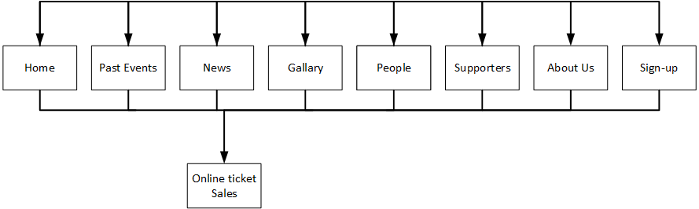

CP1406 - Assignment 2 - Project Plan - Barrier Reef Orchestra
Name: Anthony Bradshaw Login: jc304620
Name: Fionnebharr Harkin Login: jc321688
Name: Wesley Mathew Login: jc339912
Mission
The aim of the site is to increase applications from North Queensland musicians and benefactors to join the community of
the barrier reef orchestra orchestra. this will be achieved by improving the existing site so that is will appeal to a wider
age bracket .
Success Evaluation
To determine whether or not this site has achieved it's goal, three criteria will be evaluated:
- Monitor number of musician's applications.
- Monitor event enquiries and ticket sales
- Monitor Benefactor, Donation and Sponsor growth
In order to determine these criteria, the information from the month before the site was uploaded will be compared to the information from a month after the site was uploaded.
Target Audience
The site will target music lovers as well as their friends and family from across North Queensland, ages 18 to mature. in oder to target this audience the site will cooperate with the existing Facebook page providing up to date news on events and performers to the widest possible audience. the design will also be improved to increase the aesthetic value of the site, and increase the ease at which the site may be navigated. it will also be possible to both become a member and book a ticket from every page in the new site.
Content
- Home
- orchestra logo
- site navigation buttons
- Book now button (opens ticket shop in new tab)
- forms button
- Townsville council logo
- introduction to the orchestra
- Past Events
- orchestra logo
- site navigation buttons
- Book now button (opens ticket shop in new tab)
- forms button
- Townsville council logo
- reviews of recent events
- News
- orchestra logo
- site navigation buttons
- Book now button (opens ticket shop in new tab)
- forms button
- Townsville council logo
- news about...
- description of the upcoming event
- details about the conductor
- Gallery
- orchestra logo
- site navigation buttons
- Book now button (opens ticket shop in new tab)
- forms button
- Townsville council logo
- gallery of pictures of orchestral players
- People
- orchestra logo
- site navigation buttons
- Book now button (opens ticket shop in new tab)
- forms button
- Townsville council logo
- Pictures and short histories of Special Guests
- Pictures and short histories of Lifetime Members
- Pictures of Honoured Members
- Supporters
- orchestra logo
- site navigation buttons
- Book now button (opens ticket shop in new tab)
- forms button
- Townsville council logo
- benefactor roll
- sponsors logos...
- Townsville council
- AFCM
- Australian Concert Vocal Competition
- Queensland Nickel
- Stewart Business Centre
- Signs of Excellence
- Groovy Graphics
- ASAP printers
- About Us
- orchestra logo
- site navigation buttons
- Book now button (opens ticket shop in new tab)
- join button
- Townsville council logo
- list of committee members
- a scannable history of the orchestra's contributions
- Sign Up
- orchestra logo
- site navigation buttons
- Book now button (opens ticket shop in new tab)
- forms button
- Townsville council logo
- Contact Form
- Benefactor Form
Site Flowchart (Structure Diagram)

GitHub Repository
Group Github Link